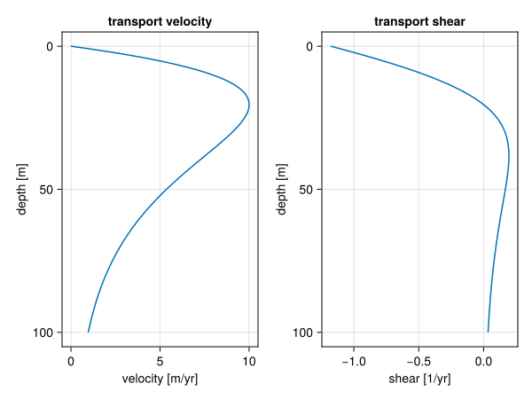

Onshore transport
In the Active Layer approach, we derived a diffusion equation for our transport model starting with a proposition for the sediment flux as,
\[q_f = -\nu_f P_f \nabla \eta,\]
where $\nu_f$ is the diffusion coefficient, $P_f$ the production and $\eta$ the sediment height. Then inserting that into the mass balance equation,
\[\partial_t \eta_f = -\nabla \cdot q_f + P_f.\]
Now we'll add a vector component $P_f w_f(\eta)$ to the flux:
\[q_f = -\nu_f P_f \nabla \eta + P_f w_f(\eta).\]
This leads to the modified advection-diffusion equation:
\[\partial_t \eta_f = \nu_f (P_f \nabla^2 \eta + \nabla P_f \cdot \nabla \eta) - \nabla \cdot (P_f w_f(\eta)) + P_f.\]
Using the chain-rule $\nabla \cdot (P_f w_f(\eta)) = P_f (w_f' \cdot \nabla \eta) + \nabla P_f \cdot w_f$, we arrive at:
\[\partial_t \eta_f = \nu_f P_f \nabla^2 \eta + (\nu_f \nabla P_f - P_f w_f') \cdot \nabla \eta - \nabla P_f \cdot w_f + P_f.\]
So we modify the advection component in the active layer approach with $P_f w_f'$, the derivative of the wave induced flux with respect to water depth and add a new term $\nabla P_f \cdot w_f$.
Xi & Burgess 2022
Xi & Burgess use the following equation for the phase velocity of waves as a function of depth:
\[v(w) = \sqrt{\frac{\lambda g}k} {\rm tanh} (k w),\]
where $k = 2\pi/\lambda$ and $g$ is the gravitational acceleration. It could be that the square root should be extended over the ${\rm tanh}$ function, following the derivation on Airy wave theory on Wikipedia. It should be noted that this velocity is the phase-velocity of surface waves, given the total depth of the water. To evaluate the transport velocity at deeper levels, we need to look at the Stokes drift. This will effectively multiply the phase velocity with a factor $\exp(-kw)$. We'll leave the proportionality as an input parameter.
\[v(w) \propto \tanh{k w} \exp{-kw}\]
Derivative of $\tanh$ is $1 - \tanh^2$, so:
\[v(w) = A \tanh(k w) \exp(- k w)\]
\[\begin{aligned} v'(w) &= A k [(1 - \tanh^2(k w)) \exp(- k w) - \tanh(k w) \exp(-k w)]\\ &= A k \exp(-k w) [1 - \tanh^2(k w) - \tanh(k w)] \end{aligned}\]
v_prof(v_max, max_depth, w) =
let k = sqrt(0.5) / max_depth,
A = 3.331 * v_max,
α = tanh(k * w),
β = exp(-k * w)
(A * α * β, -A * k * β * (1 - α - α^2))
end
#| creates: docs/src/_fig/wave-transport-magnitude.svg
#| collect: figures
module PlotWaveTransportMagnitude
using CairoMakie
using Unitful
<<wave-transport-magnitude>>
function main()
w = LinRange(0, 100.0, 1000)u"m"
f = v_prof.(10.0u"m/yr", 20.0u"m", w)
v = first.(f)
s = last.(f)
fig = Figure()
ax1 = Axis(fig[1, 1], title="transport velocity", yreversed=true, xlabel="velocity [m/yr]", ylabel="depth [m]")
ax2 = Axis(fig[1, 2], title="transport shear", yreversed=true, xlabel="shear [1/yr]", ylabel="depth [m]")
lines!(ax1, v / u"m/yr", w / u"m")
lines!(ax2, s / u"1/yr", w / u"m")
save("docs/src/_fig/wave-transport-magnitude.svg", fig)
end
end
PlotWaveTransportMagnitude.main()